<header>
    <div class="header_wrap">
        <h1><a href="./"></a></h1>
        <ul>
            <li id="profile"><a href="#section2">PROFILE</a></li>
            <li id="skill"><a href="#section2_skill">SKILL</a></li>
            <li id="works"><a href="#section3">WORKS & PROJECT</a></li>
            <li id="contact"><a href="#section5">CONTACT</a></li>
        </ul>
    </div>
</header>

<header class="header_mo">
    <div class="header_wrap">
        <h1>
            <a class="back_button" href="javascript:history.back();"></a>
            <a href="./" class="center_logo"></a>
        </h1>
        <a class="right1 i2"></a>
    </div>
    <nav>
        <div class="nav_logo">
            <i class="close"></i>
        </div>
        <ul class="nav_menu">
            <li id="profile"><a href="#section2">PROFILE</a></li>
            <li id="skill"><a href="#section2_skill">SKILL</a></li>
            <li id="works"><a href="#section3">WORKS & PROJECT</a></li>
            <li id="contact"><a href="#section5">CONTACT</a></li>
        </ul>
    </nav>
    <div class="back1"></div>
</header>

<script>
   // 메뉴 열기 및 닫기 처리
    const menuOpen = document.querySelector('.i2');
    const menuClose = document.querySelector('.close');
    const nav = document.querySelector('nav');
    const back = document.querySelector('.back1');
    const links = document.querySelectorAll('.nav_menu a');

    function toggleMenu(open) {
        nav.classList.toggle('open', open);
        back.classList.toggle('open', open);
    }

    // 메뉴 항목 클릭 시 해당 섹션으로 부드럽게 이동 및 메뉴 닫기
    links.forEach(link => {
        link.addEventListener('click', (e) => {
            e.preventDefault();
            const targetSection = document.querySelector(link.getAttribute('href'));
            targetSection.scrollIntoView({ behavior: 'smooth' });
            toggleMenu(false);
        });
    });

    // 메뉴 열기 및 닫기 이벤트
    menuOpen.addEventListener('click', () => toggleMenu(true));
    menuClose.addEventListener('click', () => toggleMenu(false));

    // 스크롤 시 헤더 스타일 변경
    window.addEventListener('scroll', function() {
        const header = document.querySelector('header');
        const headerMo = document.querySelector('.header_mo');
        const menuIcon = document.querySelector('.i2 img');

        // 모바일 헤더의 스크롤 처리
        if (headerMo) {
            if (window.scrollY > 600) {
                headerMo.classList.add('scroll-changed');
                if (menuIcon) menuIcon.src = './img/menu2.png';
            } else {
                headerMo.classList.remove('scroll-changed');
                if (menuIcon) menuIcon.src = './img/menu.png';
            }
        }

        // 데스크탑 헤더의 스크롤 처리
        if (window.scrollY > 800) {
            header.classList.add('scroll-changed');
        } else {
            header.classList.remove('scroll-changed');
        }
    });

</script>

